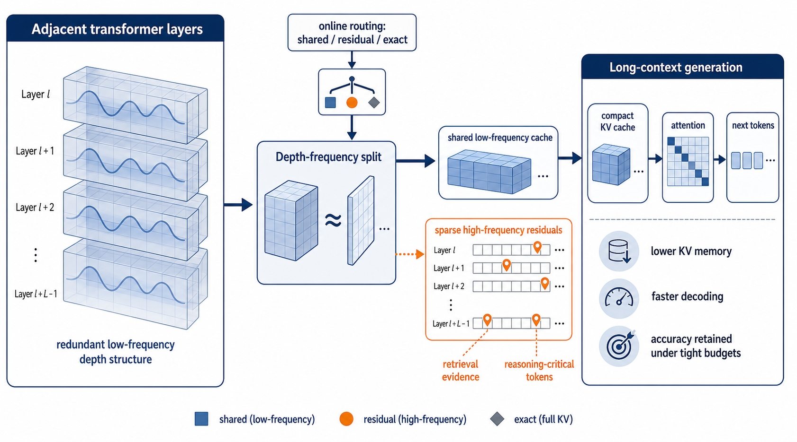

Why it matters왜 중요한가
Nearly every KV compression paper this archive has read compresses along the sequence axis (evict tokens) or the precision axis (quantize). This one takes the third axis — depth — seriously, and shows the naive version of it has a specific, diagnosable failure mode.
이 아카이브가 읽어온 KV 압축 논문 대부분은 시퀀스 축(토큰 제거)이나 정밀도 축(양자화)으로 압축한다. 이 논문은 세 번째 축인 깊이를 정면으로 다루고, 그 소박한 버전에 특정하고 진단 가능한 실패 모드가 있음을 보인다.
MiniCache established that neighboring layers hold highly similar KV states, which makes depth an unusually cheap compression axis: share one copy across B layers and the footprint drops by roughly B×. The problem is that "similar on average" and "interchangeable" are different claims. The evidence that decides a needle-in-a-haystack lookup or a cross-file code dependency is often a small deviation at one specific token-head-layer coordinate — information that is, by construction, invisible to an average. Uniform depth sharing has low reconstruction error and still shifts the attention logits that select the right span. FreqDepthKV's contribution is to make that distinction representable: a DCT along the depth axis separates the shared mean-like component from exactly those deviations, so they can be priced and preserved separately instead of being averaged away.
MiniCache는 이웃한 레이어들이 매우 유사한 KV 상태를 갖는다는 점을 확립했고, 그 덕에 깊이는 유난히 값싼 압축 축이 된다. B개 레이어에 걸쳐 한 벌만 공유하면 용량이 대략 B배 줄어든다. 문제는 "평균적으로 비슷하다"와 "서로 대체 가능하다"가 다른 주장이라는 것이다. needle-in-a-haystack 조회나 파일 간 코드 의존성을 결정하는 증거는, 특정 토큰-헤드-레이어 좌표 하나에 있는 작은 편차인 경우가 많다. 그리고 이런 정보는 구조상 평균에는 보이지 않는다. 균일한 깊이 공유는 복원 오차가 낮으면서도, 올바른 구간을 고르는 attention logit을 흔든다. FreqDepthKV의 기여는 이 구분을 표현 가능하게 만든 것이다. 깊이 축 DCT가 평균에 해당하는 공유 성분과 바로 그 편차들을 분리하므로, 편차를 평균에 묻어버리는 대신 따로 값을 매기고 보존할 수 있다.

By the numbers핵심 숫자
The main table핵심 표
| Method | EM | F1 | ROUGE-L | pass@1 | Tokens/s | Peak KV (GB) | Comp. |
|---|---|---|---|---|---|---|---|
| Full KV | 58.7 | 63.4 | 32.8 | 48.6 | 38.2 | 24.0 | 1.0× |
| StreamingLLM | 51.3 | 57.0 | 29.4 | 42.1 | 55.6 | 9.8 | 2.4× |
| H2O | 53.8 | 58.6 | 30.2 | 43.7 | 57.1 | 9.1 | 2.6× |
| SnapKV | 55.9 | 60.7 | 31.1 | 45.2 | 61.8 | 7.9 | 3.0× |
| PyramidKV | 56.4 | 61.2 | 31.4 | 45.8 | 63.0 | 7.4 | 3.2× |
| KIVI | 57.1 | 61.8 | 31.7 | 46.4 | 60.9 | 6.9 | 3.5× |
| MiniCache | 56.6 | 61.0 | 31.3 | 45.6 | 65.5 | 6.6 | 3.6× |
| FreqDepthKV | 58.3 | 63.0 | 32.5 | 48.1 | 70.4 | 6.2 | 3.9× |
What the method actually does이 방법이 실제로 하는 일
A DCT along the layer axis
For a block of B adjacent layers, the per-head caches are stacked into a B × T × d tensor and multiplied by a fixed orthonormal DCT basis along the depth axis. The first coefficient group becomes the low-frequency shared-depth component, stored once per block; the remaining groups encode high-frequency layer deviations. Because the basis is fixed, there is nothing to learn, nothing to fit per model, and the prefill overhead is a small matmul over a length-2 or length-4 axis. B = 4 by default, dropping to B = 2 for the first and last four layers, where inter-layer similarity is weakest.
인접한 B개 레이어 블록에 대해 헤드별 캐시를 B × T × d 텐서로 쌓고, 깊이 축으로 고정된 정규직교 DCT 기저를 곱한다. 첫 계수 그룹이 저주파 shared-depth 성분이 되어 블록당 한 번만 저장되고, 나머지 그룹이 고주파 레이어 편차를 담는다. 기저가 고정이라 학습할 것도, 모델마다 맞출 것도 없으며, prefill 오버헤드는 길이 2~4짜리 축에 대한 작은 행렬곱이다. 기본값은 B = 4이고, 레이어 간 유사도가 가장 약한 처음·마지막 4개 레이어에서는 B = 2로 낮춘다.
Cost measured in attention logits, not in norms
Each head picks one of three modes — SHARED (low-frequency only), RESIDUAL (shared + sparse high-frequency), EXACT (uncompressed) — by minimizing a loss that is the squared error in the attention logits QK̂ᵀ/√d against QKᵀ/√d, plus λ times the mode's memory cost. This is the part the ablation says matters most for correctness: replacing the logit loss with a norm-preserving objective lets the router pick cheap modes that keep the cache looking right while reordering which tokens attention selects, and both EM and pass@1 fall.
각 헤드는 세 모드 중 하나를 고른다 — SHARED(저주파만), RESIDUAL(공유 + 희소 고주파), EXACT(비압축). 선택 기준은 QK̂ᵀ/√d와 QKᵀ/√d 사이의 attention logit 상의 제곱 오차에 λ 곱하기 모드의 메모리 비용을 더한 손실을 최소화하는 것이다. 어블레이션이 정확도 측면에서 가장 중요하다고 말하는 지점이 바로 여기다. logit 손실을 norm 보존 목적함수로 바꾸면, 라우터는 캐시를 겉보기에는 멀쩡하게 유지하면서 attention이 고르는 토큰 순서는 바꿔놓는 값싼 모드를 택하게 되고, EM과 pass@1이 함께 떨어진다.
Residuals only where they would move the ranking
For heads in RESIDUAL mode, every token is scored by the maximum logit perturbation it would cause if its high-frequency coefficients were dropped, and only the top r·T tokens keep them. So the stored cache is dense in the low frequencies and sparse in the high ones. Deleting this mechanism gives the fastest, smallest variant in the whole paper (5.8 GB, 4.1×, 72.6 tok/s) — and costs 1.6 EM and 2.3 pass@1. That trade is the paper's clearest single result.
RESIDUAL 모드 헤드에서는 각 토큰이, 고주파 계수를 버렸을 때 유발할 최대 logit 교란으로 점수화되고, 상위 r·T개 토큰만 그 계수를 유지한다. 즉 저장되는 캐시는 저주파에서는 조밀하고 고주파에서는 희소하다. 이 메커니즘을 빼면 논문 전체에서 가장 빠르고 작은 변형이 나오지만(5.8 GB, 4.1배, 72.6 tok/s), EM 1.6점과 pass@1 2.3점을 잃는다. 이 트레이드오프가 논문에서 가장 선명한 단일 결과다.
λ is tuned until the footprint hits the target
The memory budget is not enforced per head but globally: λ is swept until the estimated peak KV footprint matches the target (3.8× average in the reported runs). Routing is decided once after prefill and then frozen for the whole generation — cheap, but it is also the limitation the authors name first in Future Work, since a dependency that only becomes relevant mid-generation cannot promote its head to a richer mode.
메모리 예산은 헤드별이 아니라 전역으로 강제된다. 추정 peak KV 용량이 목표치(보고된 실험에서는 평균 3.8배)에 맞을 때까지 λ를 스윕한다. 라우팅은 prefill 직후 한 번 결정되고 생성 내내 고정된다. 값싸지만, 저자들이 Future Work에서 가장 먼저 꼽는 한계이기도 하다. 생성 도중에야 관련성이 드러나는 의존성은 자기 헤드를 더 풍부한 모드로 승격시킬 수 없기 때문이다.
How it works어떻게 작동하나
- Group layers into blocks레이어를 블록으로 묶는다During prefill, partition the transformer into blocks of B adjacent layers (B = 4 in the middle, B = 2 at the first and last four) and stack each head's K and V caches along the new depth axis.prefill 중에 트랜스포머를 인접한 B개 레이어 블록으로 분할하고(중간은 B = 4, 처음·마지막 4개 레이어는 B = 2), 각 헤드의 K·V 캐시를 새로운 깊이 축으로 쌓는다.
- Transform along depth깊이 축으로 변환Apply the fixed DCT basis to get one low-frequency coefficient group (the shared-depth component) and B−1 high-frequency groups (the layer deviations). No retraining, no per-model calibration.고정된 DCT 기저를 적용해 저주파 계수 그룹 하나(shared-depth 성분)와 고주파 그룹 B−1개(레이어 편차)를 얻는다. 재학습도, 모델별 calibration도 없다.
- Probe 128 query positions128개 쿼리 위치를 프로브Sample query positions from recent tokens, document boundaries, and high-entropy attention rows, then evaluate the three candidate modes per head by how much each perturbs the attention logits at those positions.최근 토큰, 문서 경계, 고엔트로피 attention 행에서 쿼리 위치를 샘플링한 뒤, 헤드마다 세 후보 모드가 그 위치들의 attention logit을 얼마나 교란하는지로 평가한다.
- Assign modes under a global budget전역 예산 하에서 모드를 배정Sweep λ until the projected peak KV footprint hits the target ratio, take the argmin mode per head, and for RESIDUAL heads keep only the top-scoring tokens' high-frequency coefficients.예상 peak KV 용량이 목표 압축률에 닿을 때까지 λ를 스윕하고, 헤드마다 argmin 모드를 취한 뒤, RESIDUAL 헤드에서는 점수 상위 토큰의 고주파 계수만 유지한다.
- Decode without materializing the cache캐시를 실체화하지 않고 디코딩The attention kernel broadcasts the shared coefficients across the layer block and adds residuals only for indexed tokens, so the dense cache is never reconstructed in memory. The routing decision stays fixed for the rest of the generation.attention 커널이 공유 계수를 레이어 블록 전체에 브로드캐스트하고 인덱싱된 토큰에 대해서만 잔차를 더하므로, 조밀한 캐시를 메모리에 복원하는 일이 없다. 라우팅 결정은 남은 생성 동안 고정된다.
What to take away그래서, 가져갈 것
Depth redundancy is frequency-structured, and that distinction is worth ~1.7 F1. Swapping the DCT for plain adjacent-layer averaging — same memory footprint, same sharing idea — drops F1 from 63.0 to 61.3 and pass@1 from 48.1 to 46.0. The compression ratio is not what separates these methods; the choice of basis is.
깊이 중복은 주파수 구조를 갖고 있고, 그 구분의 값어치가 F1 약 1.7점이다. DCT를 단순 인접 레이어 평균으로 바꾸면 — 메모리 용량도 같고 공유 아이디어도 같은데 — F1이 63.0에서 61.3으로, pass@1이 48.1에서 46.0으로 떨어진다. 이 방법들을 가르는 건 압축률이 아니라 기저의 선택이다.
Reconstruction error is the wrong loss for cache compression. A cache can be close in L2 and still reorder which tokens attention picks. Scoring compression by its effect on attention logits — rather than on the cached tensors — is a design pattern that transfers directly to low-rank and quantized KV work, and the ablation shows it is worth real points on EM and pass@1.
복원 오차는 캐시 압축에 맞지 않는 손실이다. 캐시는 L2로 가까우면서도 attention이 고르는 토큰 순서를 바꿔놓을 수 있다. 캐시된 텐서가 아니라 attention logit에 미치는 영향으로 압축을 채점하는 것은 low-rank·양자화 KV 연구로 그대로 전이되는 설계 패턴이고, 어블레이션은 그것이 EM·pass@1에서 실제 점수 값어치를 한다고 보여준다.
Keep an uncompressed escape hatch. Removing EXACT mode costs 0.8 F1 and 1.1 pass@1, concentrated on Needle-in-a-Haystack and code — a handful of heads apparently need verbatim KV. Any compression scheme that is uniform across heads is leaving this on the table, and the cost of the exception is small because so few heads take it.
비압축 탈출구를 남겨두라. EXACT 모드를 제거하면 F1 0.8점, pass@1 1.1점을 잃고, 그 손실은 Needle-in-a-Haystack과 코드에 집중된다. 소수의 헤드는 KV를 원본 그대로 필요로 한다는 뜻이다. 헤드 전반에 균일한 압축 방식은 이 이득을 그냥 버리는 셈이고, 예외를 두는 비용은 그 예외를 택하는 헤드가 워낙 적어서 작다.
It composes with what you already run. Depth-frequency sharing is orthogonal to token eviction (H2O, SnapKV, PyramidKV) and to quantization (KVQuant, KIVI) — and the paper's own future-work section points at the obvious next move: assign different bit-widths to shared coefficients, sparse residuals and exact heads, turning this into a joint depth-frequency-and-precision allocation problem.
이미 쓰고 있는 것들과 결합된다. depth-frequency 공유는 토큰 제거(H2O·SnapKV·PyramidKV)와도, 양자화(KVQuant·KIVI)와도 직교한다. 그리고 논문의 future work 절이 다음 수순을 그대로 가리킨다. 공유 계수·희소 잔차·exact 헤드에 서로 다른 비트폭을 배정해, 이를 깊이-주파수와 정밀도의 결합 할당 문제로 만드는 것이다.